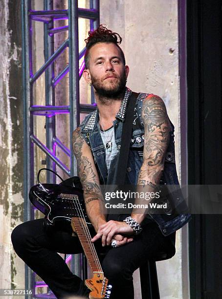

A digital platform for sound, story and cultural collaboration. Website objective: turn an exceptional body of work into a current, compelling and commercially effective global presence.
Create a premium, contemporary website that positions J Bowman as a multi-disciplinary creator working across records, film, television, advertising, brands and culture. The website must honour a multi-platinum, Grammy-nominated career while making the work feel active, relevant and ready for new commissions.
{{ o.label }}{{ o.body }}
Primary design testWithin 30 seconds, can a music supervisor, director, artist or creative lead understand who J Bowman is, feel the calibre of the work and know how to engage him?
02
Website objectives
{{ o.label }}{{ o.body }}
03
Priority audiences
{{ a.label }}{{ a.body }}
04
Messaging hierarchy
Homepage headline
Sound that moves through culture.
{{ m.label }}{{ m.body }}
05
Site architecture
{{ a.n }}{{ a.label }}{{ a.body }}
06
Homepage experience
Eight frames, in scroll order, drawn in the brand system so the sequence can be judged as design rather than description. Imagery is reference only until the shoot is commissioned.
jbowman.com
J BowmanWork · About · Services · Journal · Contact
Sound that moves through culture.Multi-platinum, Grammy-nominated songwriter, composer, producer, musician and sound engineer.
Explore the work ↓Sound off · ▶ Play reel
01 / Opening frameFull-viewport cinematic opening with the J BOWMAN wordmark, the headline, a concise credential line and immediate access to the hero reel. Sound must be opt-in, never autoplay unexpectedly.
Hero reel · 60–90 seconds
Reel · 01 / 04 · Records
Sound of SunshineComposer · Guitarist · Mixer · Engineer
00:34 / 01:22
02 / Hero reelA 60–90 second showreel moving across records, film, television, brands and performance. Show J Bowman's role on-screen so the visitor never has to infer his contribution.
Positioning
The crossoverA songwriter's instinct, an engineer's craft, and a storyteller's eye for picture.Records, film, television, advertising, brands and culture — one point of view carried across all of them.

03 / PositioningA short statement establishing the crossover between songwriting instinct, engineering craft and storytelling for image. Pair with one current portrait or studio sequence.
Selected work
AllRecordsPictureBrands / Culture
{{ w.title }}{{ w.role }}
04 / Selected workSix to nine hero projects using strong imagery and video. Allow visitors to browse by Records, Picture and Brands/Culture while keeping the first experience editorial rather than database-like.
Proof
Selected proof · roles stated, no logo wall
{{ p.title }}{{ p.detail }}{{ p.role }}
05 / ProofA restrained selection of recognised collaborators, chart achievements, screen placements and brand work. Avoid a crowded logo wall; use names and projects with accurate role descriptions.
Disciplines
{{ d.label }}{{ d.body }}{{ d.cta }}
06 / DisciplinesPresent the ways to work with J Bowman as creative outcomes, not a commodity service menu. Each pathway should lead to relevant proof and a specific enquiry prompt.
Current signal
Now · Journal 014In the room: writing to picture before the edit locksA short process note, a new sonic experiment or an archive story — proof the practice is active now.Read →
07 / Current signalFeature current work, an observation, an archive story or a new sonic experiment to demonstrate that the practice is active now.
Conversion
Bring me the idea. We'll find its sound.
Start a projectOr email direct →
Name · Organisation · Project type · Timing · Budget range
08 / ConversionClose with a confident invitation: "Bring me the idea. We'll find its sound." Link to a short, low-friction project enquiry.
07
Portfolio & case studies
{{ p.label }}{{ p.body }}
08
Content requirements
{{ c.label }}{{ c.body }}
09
Visual & interaction direction
The website should feel like the intersection of an independent record imprint, a fashion editorial and a contemporary film studio. It must be visually confident, tactile and restrained — never a theme-driven "music website."
{{ v.label }}{{ v.body }}
10
Functional requirements
{{ f.label }}{{ f.body }}
11
Accessibility, privacy & standards
{{ s.label }}{{ s.body }}
12
Search & market penetration
{{ s.label }}{{ s.body }}
13
Agency deliverables
{{ a.label }}{{ a.body }}
14
Acceptance criteria
{{ a.label }}{{ a.body }}
15
Decisions required before design
Six calls to make. Everything downstream — architecture, shoot, reel and build — waits on these.